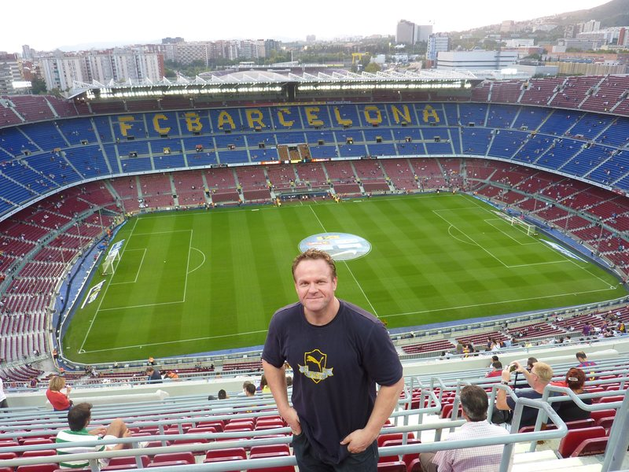

Professor of Behavioural Sciences at Monash University. I’m trained in Psychology and Public Health and teach and conduct research in the various areas of health and behavioural sciences. I founded and direct the Behavioural Sciences Research Laboratory at Monash University, and was Associate Dean Research in my Faculty (350+ academics) from 2019 to 2025.

The focus of my lab, PhD students, and post-docs is on conducting rigorous research that provides practical knowledge and solutions for wider society, including industry partners, government, community organisations and the public. We regularly develop new research measures and methodologies. This includes the development and psychometric testing of new survey scales/measures, covert methods, implicit and explicit measures, and novel experimental approaches.
More recently, we have been utilising and sometimes validating methods that employ LLMs and AI/Machine learning to study various social and psychological phenomena, and associated behaviour at a population level. I utilise a wide range of research designs and methodologies, including experimental, longitudinal and cross-sectional designs, and a multitude of statistical analysis approaches. Qualitative methodologies and one-on-one and focus group designs are also employed for initial study of new poorly understood issues. This work informs subsequent theoretical development and quantitative research for theory testing and empirical evidence gathering.
The success of my lab and research has been on the back of a collaborative ethos and culture of supporting PhD students, post-docs, and junior collaborators. This includes extensive mentoring and research training, and priority with regards publication first authorship and co-investigator opportunities on competitive grant applications. My lab has collaborated with over 250 world leading researchers, who broaden our expertise and ability to do a wide array of work on important societal issues.
What’s new
New ARC Linkage Project utilising LLMs and AI to track Islamophobia and its behavioural and psychological impacts on Australian Muslims.
National Industry PhD Program award from the Australian Department of Education.
Faculty of Arts Dean’s Award for Excellence in Research Engagement and Impact.
Systematic review for the US Department of Homeland Security on interventions to increase trust in government in democratic contexts.
Areas of research
Alcohol consumption and harms
Gambling and associated harms
Psychological aspects of obesity
Addictive behaviour
Impact of women’s physical conditions on mental health and quality of life (e.g., endometriosis, PCOS/PMOS)
Physical activity and sport participation
Body image and disordered eating
Drugs in sport
Intergroup conflict
Political extremism and hate
Social identity
Prejudice and discrimination
Attitude measurement and change
Embodied cognition
Research Areas
Research areas
They overlap more than they look. Stigma is a measurement problem, marketing is a behaviour-change problem, and almost everything ends up needing a better scale.
Weight stigma and obesity
How explanatory models of obesity move blame, discrimination and treatment; how internalised weight bias relates to eating, distress and quality of life; and whether prejudice-reduction interventions with health professionals hold up under randomised trial. Cross-national work with Rebecca Puhl, Janet Latner and Lenny Vartanian across four countries.
Alcohol industry sponsorship and hazardous drinking among sportspeople in New Zealand, the United Kingdom, Australia and Brazil; children’s exposure to alcohol advertising in televised sport; and whether counter-advertising can dilute the effects of sponsorship. This work has informed submissions to the Australian Medical Association, Eurocare and national preventive health agencies.
Content audits · field experiments · policy evaluation
Gambling advertising and harm
The extent of children’s and young people’s exposure to gambling advertising in sport and non-sport television, the relationship between gambling advertising and attitudes and behaviour, and gambling among people experiencing homelessness.
Meta-analysis · media audits · qualitative interviews
Prejudice, extremism and violence
Islamophobia in Australia and its impacts; when perceived threat translates into anti-Muslim behaviour; existential anxiety and support for violent extremism in Indonesia; homophobic language in youth sport and how to reduce it; and gender-sensitive approaches to preventing violent extremism in Asia and the Pacific.
Cluster randomised trials · national surveys · scale development
Physical activity, health behaviour and population data
Why people avoid physical activity and sport, and what stigma has to do with it. Also data-linkage work on self-harm and mental health service use in culturally and linguistically diverse communities in Victoria, and dietary and physical activity intervention trials.
Data linkage · longitudinal cohorts · randomised trials
Measurement and psychometrics
Instruments developed or validated with colleagues include the upward and downward physical appearance comparison scales, the Tendency to Avoid Physical Activity and Sport Scale, the Weight Stigma Exposure Inventory and the Hate Behaviours Scale, with translations and invariance testing across Chinese, Italian, Turkish and Malaysian samples. Related work on replication, and on what implicit measures do and do not tell us.
EFA and CFA · measurement invariance · IRT · Bayesian methods
Publications
Publications
130 peer-reviewed journal articles, eight book chapters, and reports for government and non-government bodies. Filter by topic, or search by author, title or journal.
Google Scholar: h-index 53, i10-index 115, roughly 10,160 citations. Scopus: h-index 41, roughly 5,375 citations. Of 130 indexed publications, 75% appear in Q1 journals and 26% sit in the top 10% of most-cited articles worldwide. Co-authors in 44 countries.
† corresponding author when not listed first · * with PhD student · # with post-doctoral researcher
Funding
Research funding
Approximately AU$5.7 million in national competitive and industry research income, from the Australian Research Council, the NHMRC, UN Women, state health promotion foundations, and government departments in Australia, the United States and the United Kingdom.
2026–2030
Tracking Islamophobia and its impacts on Australian Muslims’ lives
ARC Linkage Project LP250100022, with industry partner funding · AU$875,437 · Carland, O’Brien (conceptual and writing lead), Vergani, Vakhitova
2026–2030
National Industry PhD Program
Department of Education, Australian Government · AU$232,289 · Chief Investigator
2025–2026
The effectiveness of interventions to increase trust in government in democratic contexts: a systematic review
US Department of Homeland Security · AU$108,736 · Vergani, O’Brien, Vakhitova
2024–2025
Islamophobia in Australia Report
Australian Islamophobia Register · AU$120,000 · Carland, O’Brien, Vergani
2020–2023
Stigma training for general practitioners to increase medication-assisted treatment of opioid dependence
Camurus Pty Ltd and others · AU$86,600
2020–2023
Examination of the risk of suicide following injury outcomes
Department of Health Victoria, Graduate Research Industry Partnership · AU$70,000 · Chief Investigator
2020
‘No alcohol’ products: a rapid review
Victorian Health Promotion Foundation · AU$23,300 · Lead Chief Investigator
2019–2023
Countering the influence of alcohol sport sponsorship: a media intervention
NHMRC Project Grant APP1159262 · AU$412,418 · Dixon, O’Brien, Vandenberg and others
2019–2021
Evaluating programs aimed at gender transformative work with men and boys
VicHealth · AU$199,993 · Roberts, Elliott, O’Brien and others
2019–2020
Research and engagement addressing homophobia in sport
You Can Play · AU$27,474 · Lead Chief Investigator
Greater Dandenong City Council · AU$15,000 · O’Brien, Vergani
2015–2017
Western Australian adolescents’ exposure to alcohol advertising
Healthway and the Drug and Alcohol Office · AU$144,040 · Jones, Pettigrew, O’Brien
2012–2015
Exposure to alcohol advertising in televised sport
ARC Linkage Project · AU$166,136 · Lead Chief Investigator
2012–2015
Children and young people’s exposure to alcohol advertising in sport
Victorian Health Promotion Foundation · AU$112,500 · Chief Investigator
2012–2015
Alcohol advertising and sponsorship in Australia
Australian National Preventative Health Agency, NHMRC administered · AU$80,000 · Lead Chief Investigator
2009–2012
Hazardous drinking and sponsorship in UK sport
Alcohol Research UK · AU$100,000 · Chief Investigator
2008–2009
Physical activity intervention in people over 55 years
Durham and Chester-le-Street Lifestyle Initiative, United Kingdom · AU$80,000 · Co-Chief Investigator
2006
Dietary intervention adherence study
New Zealand National Heart Foundation · NZ$15,000 · Chief Investigator
2005–2007
Alcohol sponsorship and hazardous drinking
Alcohol and Liquor Advisory Council of New Zealand · AU$14,500 · Chief Investigator
2005–2006
Alcohol in sportspeople
Maurice and Phyllis Paykel Trust · AU$8,500 · Chief Investigator
Leadership
Academic leadership and mentoring
Six years as Associate Dean Research across a faculty of more than 350 academics, and a longer record of building the grant-writing and research training that early career researchers actually need.
Mentoring and research training
As Associate Dean Research I designed and ran the faculty’s training programmes for national competitive grant schemes. The DECRA programme is the clearest measure of whether that work landed: 23 successful fellowships at a 33% success rate, against a national average of 17.5%.
The same principle runs through the lab. PhD students, post-docs and junior collaborators get extensive mentoring and research training, and they get priority on first authorship and on co-investigator positions in competitive grant applications. That is the reason the collaborations hold together, and it is deliberate.
Alongside this I have chaired academic appointment panels, sat on tenure and promotion panels for more than 13 years, chaired the Faculty Early Career Researcher Committee, and served on Monash’s Digital Research Strategy and Security Committee, where I secured government approval for access to sensitive datasets granted to only three universities to date.
Editorial roles
2026–present
Editorial Board, BMC Public Health
2021–present
Associate Editor, Obesities
2019–present
Associate Editor, International Journal of Environmental Research and Public Health
2014–2021
Associate Editor, Addiction
Stepped down on becoming Associate Dean Research
Awards
2025
Faculty of Arts Dean’s Award for Excellence in Research Engagement and Impact, Monash University
2023
Wiley Top Viewed Article of the Year, British Journal of Social Psychology
2019
Victorian Health Promotion Foundation Award, Research into Action
2018
Dean’s Award for Excellence in Research Enterprise, and the Monash ARC Research Mentoring Award
2013
Emerging Research Excellence Fellowship, Monash University
Leadership and service
2019–2025
Associate Dean Research, Faculty of Arts, Monash University
Research strategy and budget across roughly 250 academic staff. Built and led grant training programmes that produced 23 successful DECRA fellowships at a 33% success rate, against a national average of 17.5%.
2016–2019
Research Director, School of Social Sciences, Monash University
2013–present
Founding Director, Behavioural Sciences Research Laboratory, Monash University
2012–2016
Head of Behavioural Studies, Monash University
Current
Scientific Advisor, Eurocare, the European peak body for alcohol policy
Past
External advisor, Healthway, Government of Western Australia
Collaborators
Collaborators
My lab has worked with more than 250 researchers in 44 countries. Below are the colleagues I work with most closely and most often. Names link to their Google Scholar profiles.
John A. Hunter
Professor, University of Otago
Janet Latner
Professor of Clinical Psychology, University of Hawai‘i at Mānoa
More than 45 higher-degree completions at doctoral, masters and honours level, across New Zealand, the United Kingdom and Australia.
What I look for
A defensible design and a real question. I am most useful to students working on stigma, alcohol and gambling policy, prejudice and extremism, health behaviour, or measurement development, and to students who want serious quantitative training rather than a thesis assembled from convenience data. I also supervise PhDs by publication, and I am happy to talk with candidates who already have papers in progress and need a coherent programme built around them.
Before you write
Send a one-page outline: the question, why it matters, the design you have in mind, and the data you can realistically get. Tell me which scholarship or funding you are applying for and when it closes. A CV and one writing sample help. I read everything that arrives with those four things in it.
Dan Myles · Thi Le Pham · Nadia Bevan · Erik Denison · Georgia Rush · Matteo Vergani · Muhammad Iqbal · Victoria Absalom (committee, United Kingdom)
Teaching
Teaching
Twenty years of teaching across four institutions in three countries, in class sizes running from 17 to 800.
Undergraduate
Introductory psychology; social psychology, with a focus on conflict; health psychology and mental health; personality and individual differences; psychological research methods; psychometrics; human factors; behaviour change; public health policy; and the social determinants of health.
Postgraduate
Research methods in the Master of Research in Psychology, and health psychology in the Master of Clinical and Health Psychology.
How I teach it
Method subjects are where most of the value sits, and where most teaching goes wrong. I teach research design and psychometrics through problems students have to solve rather than through worked examples they only have to follow, which is slower and produces researchers who can tell a defensible design from a convenient one.
Student evaluations
Monash
4.5–4.7 out of 5.0
Manchester
4.5–4.7 out of 5.0
Wollongong
4.9–5.0 out of 6.0
Contact
Get in touch
I am glad to hear from researchers, prospective students, journalists and policy staff working on stigma, alcohol and gambling policy, prejudice and extremism, or measurement.